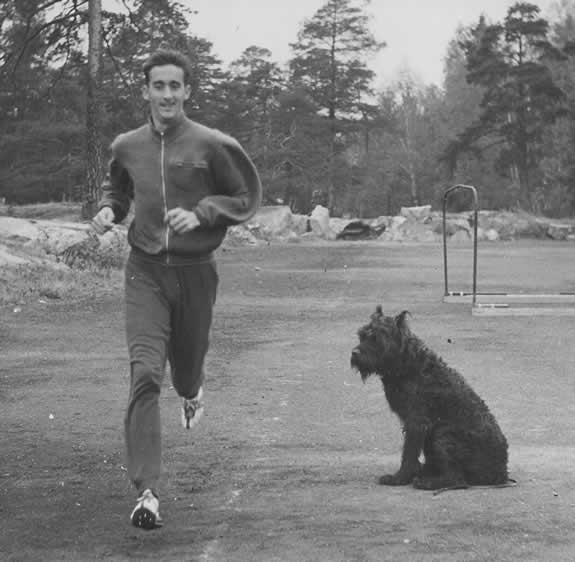
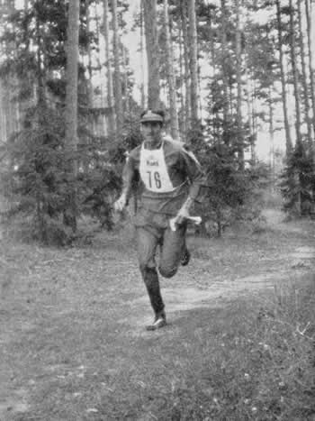
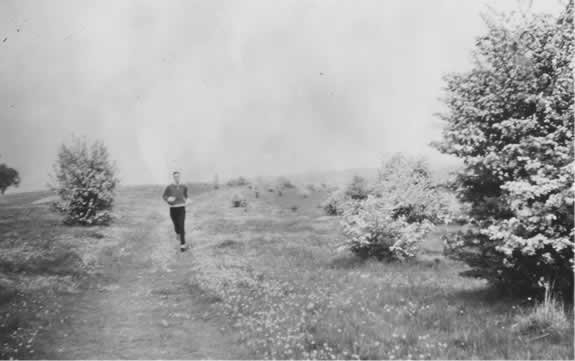

В этой главе мы рассмотрим вопросы, связанные с особенностями спортивной тренировки – как подготовить себя к соревнованиям во всем диапазоне дистанций: от 100 метров до марафона. Подготовка в каждой группе дистанций имеет свои особенности, но основные принципы одни и те же, вне зависимости от того, бежит спортсмен несколько секунд или несколько часов. Цель тренировки заключается в том, чтобы подготовить себя к преодолению намеченной дистанции за минимальное время. В основе успешной тренировочной программы лежит понимание того, что требуется сделать для достижения этой цели.
Цель тренировки заключается в том, чтобы пробежать избранную дистанцию насколько возможно быстро. Для того чтобы понять, как подготовиться к соревнованиям, нужно знать, что такое соревновательный забег и как его бежать.
Предположим, что вы прилетели из космоса и не имеете ни малейшего представления о беге. Что вы будете делать, если вам предложат принять участие в соревнованиях? На подготовку даётся один месяц. Вам покажут, где будет находиться старт и где будет финиш. Протяженность дистанции не имеет значения, ведь если вы прилетели из космоса, то не имеете представления о принятых на земле соревновательных дистанциях. На вопрос, как нужно тренироваться, я отвечу, что задача состоит в том, чтобы подготовить себя к преодолению дистанции за минимально возможное время. Вы немного отдохнете, и начнете тренироваться, снова и снова пытаясь пробежать дистанцию. В день соревнований вы побежите со старта во всю силу, пытаясь уйти от соперников. Из опыта тренировки вы знаете, какой темп будет приемлемым. Также известно, что если становится трудно поддерживать взятый темп, то, вероятно, это трудно и для других. Чем выше скорость, тем больше шансов победить других. Если другой бегун сел вам «на хвост», то вы невольно оказываете ему услугу, так как он хочет отсидеться, либо, наоборот, он представляет опасность, так как пытается обогнать вас и задать свой темп. Если второй бегун прицепился сзади, то вам нужно ускориться и попытаться оторваться, если же это «коварный замысел», то тактика может быть другой – дайте ему выйти вперёд. Если он силен, то держитесь за ним изо всех сил. Соберитесь и подготовьтесь к окончательному рывку. Это самый трудный момент. Вы должны быть начеку и готовы к тому, что ваш оппонент тоже к нему готовится. Нужно атаковать первым и получить преимущество в несколько ярдов или футов, прежде чем соперник опомнится. Если соперник начнет спринт первым, вы должны мгновенно среагировать и стараться измотать его и, в конце концов, обойти на несколько ярдов.
Таким образом, никогда не давайте преимущества вашим противникам. Наглядный пример этого произошел на соревновании World Record Mile (Рекордная Миля), в 1985 году, Себастьян Коэ позволил Стиву Крэму значительно оторваться на втором круге. Коэ использовал сэкономленные силы, чтобы нагнать соперника на третьем круге, но это стоило таких усилий, что он уже не смог сделать финишный рывок, и в результате проиграл забег. Вы не должны терять близкий контакт со своими основными соперниками, мистер Коэ!
Давайте теперь обратимся к основам классической теории интервальной тренировки Гершлера и прольём свет на эту не всегда ясную тему, которая к тому же зачастую обрастает домыслами.
Система Гершлера включает в себя тренировку на отрезках от 2 000 до 100 метров. Он считает, что в зимние месяцы, для проведения полноценной подготовки достаточно использования лишь трёх дистанций: 100, 200 и 400 метров. Это утверждение привело к распространённому заблуждению, что Гершлер и его спортсмены используют только такую разновидность работы. Нет! Даже Рудольф Харбиг, рекордсмен мира на дистанциях 400 и 800 метров бегал во время подготовки к соревнованиям отрезки 2 000 метров. Вот типичное тренировочное занятие Харбига, взятое из его дневника:
40 мин. лёгкий бег, 1х2 000 м; 20 минут трусцой, 2х1 000 м; 12 минут трусцой; 2х600 м, 12 мин трусцой; 2х300 м, 8 мин трусцой; 1х200 м, 6 мин трусцой; 1х100 м, 10 мин трусцой.
Правильно применяемая интервальная тренировка не только научно обоснована, но она и на практике подтвердила свою эффективность в подготовке спортсменов к соревнованиям на высшем уровне. Неправильное применение интервальной тренировки привело к тому, что эта проверенная временем и зарекомендовавшая себя система подготовки отвергается и критикуется бегунами, испытывающими с ней трудности. Это происходит оттого, что бездумное применение интервальной тренировки приносит вред. С другой стороны, при правильном применении, она дает необыкновенные результаты. Истина заключается в том, что интервальная работа лучше любой другой служит целям тренировки мышц и сердечно- сосудистой системы. Прелесть её также в том, что для этого требуется лишь малая часть времени, которое потребовалось бы для достижения того же результата средствами продолжительного медленного бега.
Использование более продолжительных отрезков соревновательных дистанций, наряду со средними дистанциями является неотъемлемой частью системы Гершлера, которой сейчас уже более полувека. Она появилась ранее других известных систем тренировки и нужно отдать должное Гершлеру, который, выдвинув свои идеи, намного опередил других спортивных специалистов. Одна из основных ошибок, при использовании интервальной тренировки, это попытка превращать её в соревнования. Основной девиз Гершлера для интервальной тренировки – «Работай легко». Когда я начинал увлекаться и бежать на тренировке быстрее, он всегда кричал мне "Langersammer (Медленнее)!". Вы должны бежать своим темпом, не выходя за рамки возможностей. Когда мы бегали быстрые отрезки, то всегда контролировали прикладываемые усилия. В результате, даже после тренировки 80х200 м, я был в состоянии пойти пробежать 3 мили вокруг леса в Фрейбурге, и мог провести вечером ещё одну тренировку. Я получал удовольствие от этих тренировок, хотя они и заставляли меня попотеть! Следующие факторы должны тщательно контролироваться во время интервальной тренировки:
Количество быстрых отрезков в интервальной тренировке должно быть не менее десяти и продолжительность интервалов отдыха должна быть достаточной для восстановления. Степень восстановления определяется частотой пульса, измеряемой во время интервала отдыха. Задача заключается в поддержании скорости, достаточной для того, чтобы пульс к концу отрезка достигал 180 ударов в минуту (18 за 6 секунд). При такой высокой частоте пульса восстановление происходит очень быстро, поэтому для правильного измерения лучше воспользоваться электронным пульсометром. Если пульсометра нет, то измеряйте пульс на запястье или на шейной артерии (только на одной!), прижимая указательный палец. Для измерения частоты пульса равной 180 ударов в минуту, более правильным будет отсчитать 17 ударов за первые 6 секунд, так как частота пульса после остановки быстро снижается.
Интервалы должны пробегаться без остановки, и в том же ритме, что и отрезки, это же касается и ритма дыхания. Это способствует эффективному восстановлению. Продолжительность интервалов определяется частотой пульса. Когда она понизится до 120 ударов в минуту – 12 за 6 секунд – восстановление завершено и вы готовы к следующему отрезку. Продолжительность интервалов после нескольких первых отрезков будет относительно короткой, а затем, по мере накопления утомления, потребуются более длительные интервалы восстановления.
Типичная тренировка (для спортсмена с определённым уровнем подготовки), например 20х200 метров может иметь следующую последовательность интервалов:
Следующие 14х200 метров могут потребовать одинакового времени восстановления в 60 секунд. Если после этого начинает накапливаться утомление, и требуется увеличение интервалов до 65 секунд, прекращайте бег!
Прогресс в тренировке определяется сокращением времени интервалов отдыха и увеличением количества повторений, пробегаемых до накопления усталости.
Кроме этого, прогресс определяется способностью пробегать отрезки с более высокой скоростью, без превышения верхней допустимой границы пульса (не выше 180 ударов в минуту), бег должен быть лёгким, без излишнего напряжения.
Время пробегания 100 метрового отрезка варьируется от 20 секунд для новичка, до 15 секунд для хорошо тренированного спортсмена. Для 200 метровых отрезков это время составит 40 и 30 секунд, а для 400 метровых, соответственно 80 и 60 сек.
Количество повторений может меняться от 10 до 40. Бегуны международного уровня могут бегать и больше. Но прежде чем вы достигните такого уровня подготовки, необходимо будет потратить время и на другие типы тренировочной работы (об этом ниже).
Интересно отметить, что во время интервальной тренировки основное развитие функциональных возможностей организма происходит во время интервалов отдыха; такой вывод был сделан Вальдемаром Гершлером и профессором Рейнделом из Фрайбургского Института Спорта после многолетних исследований над тысячами субъектов. Привожу ниже выдержку из статьи Гершлера, опубликованной более тридцати лет назад в журнале «Уорлд Спортс»:
Советы тренера
ЭЙ, НЕ ТАК БЫСТРО!
Спортсмены не всегда правильно представляют себе, какова должна быть длина тренировочной дистанции, как быстро её нужно пробегать и как часто нужно тренироваться. Снова и снова повторяю, ОНИ БЕГУТ СЛИШКОМ БЫСТРО, в особенности на более коротких дистанциях (пишет Вальдемар Гершлер). В зимнее время можно эффективно тренироваться с использованием всего двух дистанций – 100 и 200 метров, бегая трусцой в интервалах между отрезками.
Спринтер, способный пробежать 100 м быстрее 11 сек, может бегать тренировочные отрезки со скоростью 12-13 сек. Бегун на 400 метров, пробегающий эту дистанцию быстрее 50 сек, может бежать 100 м отрезки со скоростью 14-15 сек, спортсмен, имеющий на 800 м результат лучше 1.53 и на 1 500 м лучше 3.50, также может бегать отрезки за 14-15 сек, спортсмен, бегущий 5 000 м из 14.30 или 10 000 из 31 мин – за 16-17 сек. Пробежки трусцой между отрезками должны занимать 30 сек для хорошо тренированного спортсмена, 45 сек для спортсмена среднего уровня и 60 сек для новичка.
Указанное время пробегания отрезков может показаться скромным, но с точки зрения тренировочной нагрузки, оно достаточно быстро – я уверен, что для многих его нужно ещё увеличить. Время пробегания отрезка имеет второстепенное значение, более важно время интервалов отдыха и именно ему нужно уделять внимание.
Приступая к занятиям не нужно форсировать усилия, и если вы чувствуете утомление, то это сигнал прекратить занятие. Но через три или четыре месяца хороший спортсмен, тренирующийся четыре-пять раз в неделю, легко справится и с 40 повторениями. (Спринтерам не следует бегать 40 повторений, для них лучше выполнять по 20).
При использовании в тренировке 200 метровых отрезков, спринтер может пробегать их за 25-26 сек, бегун на четверть мили за 28-30 сек, бегун на 800 и 1 500 метров за 30 сек и бегун на длинные дистанции за 33-34 сек. Интервалы между отрезками, как и в случае со 100 м отрезками, зависят от подготовленности бегуна, для спортсмена среднего уровня это 60 сек, для новичка 75 сек. Через три или четыре месяца занятий количество повторений может быть доведено до 40. Кроссовые пробежки зимой дают хороший эффект, но спринтер не должен их выполнять. Нужно помнить, что спортсмен сам может определить, что ему лучше подходит, исходя из опыта и наблюдения за своим состоянием.
Спортсмен, не тренирующийся под руководством тренера, должен ставить себе долгосрочные цели. Например, 20 летний бегун на средние дистанции может сказать себе, что после трёх – четырех месяцев зимней тренировки он будет бегать 40х200 м по 29 сек без особого напряжения. Интервалы бега трусцой между отрезками, будут составлять 60 сек. Если спортсмен тренируется значительное время, скажем четыре или пять лет, то интервалы отдыха могут быть сокращены до 45 сек.
Две другие тренировки, которые он сможет выполнять, будут включать 40х100 м по 14,5 сек (либо 15-16 сек, по решению тренера), с интервалами отдыха 30 сек, и 30х400 м по 70 сек (или 72) в интервалах бег трусцой 60 сек (75-90 сек). И, наконец, помните, что развитие силы жизненно важно для прогресса в спорте. Если вы считаете, что вам недостает силовой подготовки, скажем, ног, груди или рук, то тренируйтесь с отягощениями.
Учитывая советы Гершлера, давайте попробуем составить план тренировочного занятия, включающего интервальный бег. Начнем с подготовительных действий. Вероятно, ваше тело несколько расслаблено и не вполне восстановилось после предыдущего занятия. Может быть, вы даже немного боитесь очередной тренировки, потому что работаете слишком напряжённо.
Начните с расслабления вашего сознания, не торопитесь. Вы можете даже дойти до старта пешком, затем, в течение 20 минут, бегите не спеша, но поддерживая высокую частоту шагов. Многие спортсмены недостаточно разогреваются. Если возможно, то разогрейтесь не на дорожке, а в парке, лесу или в другом месте, где можно сконцентрироваться на технике и дыхании. Никогда не делайте не разогретым эти глупые упражнения на растяжение. Никогда не делайте статические растягивающие упражнения, они приводят к травмам. Перед выполнением любых упражнений пробегитесь минут 10-15. Затем, в течение 5 минут, делайте упражнения, представляющие собой свободные движения, имитирующие бег. Упражнения с большой амплитудой движений позволят вам бежать более свободно.
Теперь вы готовы к интервальной тренировке. Переобуйтесь в соревновательную обувь. Если вы планируете бежать 200 метровые отрезки по 32 секунды, то начните легко, выполняя несколько первых повторений по 38 сек, и постепенно сокращая время до запланированного уровня. Например, 38, 36, 34, 33 и, наконец, 32 сек. Если никогда раньше вы не выполняли такой тренировки, то необходимо определить продолжительность интервалов отдыха, которая соответствует вашей спортивной форме. Для этого, во время интервалов отдыха, после окончания быстрых отрезков прилягте и измеряйте пульс, как было описано ранее. В течение нескольких первых интервалов пульс будет восстанавливаться быстро, но через несколько повторений их продолжительность придёт к примерно постоянному значению. Значения пульса для 6 секундных измерений могут быть 17, 17, 16, 16, 16, 15, 15, 15, 15, 14, 14, 14, 13, 13, 13, 12, и суммарное время восстановления займет 80 сек. Так как на тренировке во время интервала вы будете бежать трусцой, то он будет примерно на 10 секунд продолжительнее. Теперь вы можете начать бегать с использованием 90 секундных интервалов, контролируя пульс на каждом пятом интервале. Если требуемое время восстановления превысит 90 секунд, ПРЕКРАЩАЙТЕ ТРЕНИРОВКУ. Ваше тело также подаст вам сигнал в виде быстро накапливающегося утомления.
Обратите внимание, что максимальная частота пульса, которую вы будете в состоянии определить, составляет приблизительно 170 ударов в минуту, так как пульс быстро падает при таких значениях. Если вы пользуетесь электронным пульсометром, то максимальные значения пульса он покажет к концу пробегания отрезков. Если при измерении пульса вы насчитаете 18 ударов за 6-секундный промежуток, то снизьте скорость бега, так, чтобы вы насчитывали только 17 ударов.
Контролируйте время интервалов, а не дистанцию. Так, например, новичкам может потребоваться пробежать 100 метров, чтобы их пульс поднялся до 180 ударов в минуту, и некоторым для этого будет достаточно бежать не быстрее 20 секунд. Изменение параметров интервальной тренировки с течением времени будет отражать ваш прогресс. С ростом подготовленности вы увидите, что время интервалов существенно снизилось, количество пробегаемых отрезков возросло, и длина дистанции выросла со 100 м до 200, 400 и более, как изложено в статье Гершлера.
Это означает, что вы стали более тренированным, интервальная тренировка воспринимается легче, и вы можете проводить её за более короткое время! Я выполнял сумасшедшую интервальную тренировку, хотя сегодня не считаю, что было необходимым делать такие огромные объёмы. Вот примеры некоторых тренировочных занятий:
В дополнение к этой тренировке я бегал в течение 1 часа для разогрева и 20 минут после окончания занятия. Общее время занятий превышало три с половиной часа. Сегодня, имея за плечами многолетний опыт интервальных тренировок, мы знаем, что достаточно ограничиться пробеганием 10-20 отрезков по 400 м за 60 сек, с интервалами от 25 до 30 секунд. Когда вы достигните этой стадии, пора переходить к следующему этапу тренировки – подготовке к соревнованиям. На соревнованиях требуется поддерживать высокую постоянную скорость с короткими ускорениями, которые позволят выиграть финиш.
На этом этапе подготовки вы должны начать имитировать соревновательный бег, с использованием быстрого и предельно быстрого бега, продолжая временами интервальные тренировки (но не перед соревнованиями). Имитация соревнований включает в себя:
Эта тренировка должна продолжаться в течение 6 недель. Например, бегун на 5 000 метров, намеревающийся показать результата 14 минут, может попытаться бежать круги по 68 секунд. Этого будет достаточно, так как благодаря быстрому финишному кругу, средняя скорость на соревновании будет выше. Нужно практиковаться бегать по 68 сек круг на максимально возможное расстояние. Следующим этапом будут быстрые забеги продолжительностью 14 минут. Эта тренировка поможет адаптироваться к продолжительности напряжённой работы на соревновательной дистанции. После этого вы готовы проводить прикидочные забеги на 5 000 метров.
Прикидки являются неотъемлемой частью тренировки. В начале сезона спортсмен, как правило, может пробежать лишь 2 или 3 круга, прежде чем начнет терять скорость и утомляться. На второй прикидке я обычно чувствовал значительное улучшение, и мог пробежать 5 или 6 кругов прежде, чем бег начинал деградировать. После полудюжины прикидок, моё психологическое состояние достигало той ступени, когда, начиная бег, я думал: «всего 12 кругов впереди!», «вперёд!», «быстрее!». «Быстрее!», а не мучительная борьба за достижение финиша. Мои ноги откликались на этот призыв и не боролись с дистанцией, а работали как хорошо смазанная машина. Многие бегуны никогда не знали такого атакующего порыва, даже на соревнованиях, так как они либо были обескуражены результатами первых прикидок, либо потому, что они вообще их не делали! Несмотря на то, что я устанавливал мировые рекорды, мне приходилось преодолевать эту трудную психологическую и физиологическую фазу в начале каждого бегового сезона, и вы должны быть к этому готовы. Необходимо преодолеть это, если хотите победить. Вы должны укрепить свою волю и свое тело, а когда вы будете пожинать плоды своей тренировки, то забудете, каких усилий это стоило.
Имейте в голове картину непрерывного движения. Одна лишь интервальная тренировка может переутомить вас и даже разрушить подготовку. Очень важно в полной мере использовать все компоненты сбалансированной тренировки – интервальный бег, темповый бег, общеукрепляющий бег и силовую подготовку – в течение всего года, но только со смещением акцента в зависимости от совершенствования вашей формы и приближения соревновательного сезона. Избегайте истощающих интервальных нагрузок – это самая распространённая ошибка. По мере роста подготовленности спортсмена, тренер предлагает ему бегать всё большее количество быстрых 200 м и 400 м отрезков, с всё сокращающимися интервалами отдыха. Такая тренировка неплохо выглядит в тренерском отчёте, но очень быстро превращает чемпиона в развалину.
Интервальная тренировка может быть очень разрушительна, если не следует правилам Гершлера.
Итак, не форсируйте скорость, не спешите сокращать продолжительность интервалов и увеличивать длину отрезков.
Если требуется отработка высокой соревновательной скорости, то это можно делать на отрезках, пробегаемых с максимальной скоростью, с достаточными промежутками пассивного отдыха (доходящими до 20 минут). Заметьте, что это не интервальная тренировка, и здесь действуют другие правила. Например, тренировки такого типа выглядят следующим образом:
Количество быстрых отрезков обратно пропорционально скорости. Таким образом, чем быстрее вы бежите, тем меньшее количество повторений вы должны делать. Во время хорошей погоды, в перерывах между отрезками нужно делать интервалы пассивного отдыха, но не бега, перед началом очередного отрезка пробегите для разогрева один круг с небольшими ускорениями по 10-15 метров. После этого пройдитесь пешком в течение минуты или двух, подготавливая себя к очередному отрезку.
Для того, чтобы подготовить себя к быстрому бегу на отрезках, необходимо включить в разминку немного ускорений. Начните с лёгкого бега и упражнений, затем наденьте шиповки и пробегите 6х100 метров, начиная легко и постепенно увеличивая скорость до той, с которой вы планируете пробегать тренировочные отрезки (например, 16, 15.7, 15.3, 14.9, 14.5, и 14.0 секунд на 100 метров). После подготовительных ускорений пробегитесь трусцой к месту старта. Очень важно тщательно измерять скорость подготовительных отрезков, так как необходимо выработать чувство скорости, с которой вы побежите тренировочные отрезки. Во время подготовительных разогревающих пробежек вы должны «разбудить» ощущение ритма, прикладываемых усилий и техники бега.
Для выработки ощущения темпа бега на дистанции, важно тщательно контролировать время на промежуточных отметках. Например, если спортсмен собирается пробежать 400 м за 50 сек, то 100 метров он должен преодолеть за 12,8, 200 метров за 24,5 и 300 метров за 37 секунд. Обратите внимание, что время на каждом последующем 100 метровом отрезке дистанции должно быть немного меньше, чем на предыдущих (учитывая, что спортсмен стартует с нулевой скоростью). Финиш должен быть мощным, без чувства утомления и потери формы. При плохом распределении сил, время может распределяться следующим образом: 11 сек, 11.5 сек, 12.75 сек и 14.25 сек. К финишу спортсмен приходит физически и психологически опустошенным, и никакой пользы такой бег не приносит.
Кроме этого, Гершлер учил нас всегда финишировать на 10 метров дальше финишной линии. Он уделял большое внимание тому, как спортсмен пересекает финишную ленточку. На Олимпийских Играх в Хельсинки с ним чуть не случился инфаркт, когда он увидел, как Джози Бартел, завоевавший золотую медаль на дистанции 1 500 м, перед самым финишем бросил бег и чуть не позволил Бобу Макмиллану из США вырваться вперёд. Учитесь бежать всегда дальше финишной ленточки, а не до неё!
Тренировка – это гораздо больше, чем интервальная работа. Наряду с быстрым бегом на тренировках, вы должны практиковаться выступать на соревнованиях. Указанное выше время пробегания тренировочных отрезков подразумевает тренировку спортсмена международного уровня, находящегося на пике спортивной формы. Вы должны провести соответствующие коррекции. Например:
(N.B. На каждой тренировке нужно пробегать отрезки с одинаковой скоростью, Указанный прогресс результатов должен происходить постепенно).
Такая работа может строиться очень гибко и включать огромное количество вариаций. Тренировка должна превратиться в интересную игру, заключающуюся в сочетании различных элементов в нужных количествах и в нужное время. В начале года тренировка в основном включает бег по лесу и по холмам. По мере того, как ваша форма улучшается, вы можете добавлять интервальную тренировку, а при приближении соревновательного сезона - быстрые отрезки. С началом соревновательного сезона интервальная тренировка отходит на второй план, уступая место всё более и более быстрым отрезкам (разумеется, с меньшим количеством повторений) и соревновательной практике.
Гершлер учил, что максимальная скорость вырабатывается пробеганием 100 – метровых спринтерских отрезков. Однако, вы должны в течение всего года поддерживать общие объёмы бега и не забывать о силовой подготовке (см. Главу Пятую).
Когда я был в своей лучшей форме, то был способен тренироваться от трёх до шести часов в день, используя интервальную тренировку, быстрые отрезки и прикидочное пробегание соревновательных дистанций. Каждый день в сумме я пробегал дистанцию, равную марафонской и даже больше. Мой организм был способен выдерживать такие нагрузки благодаря постепенной многолетней подготовке. Единственная проблема, с которой я сталкивался, это огромное количество изношенной обуви. Но я не износил свое тело. Для интереса я решил привести здесь записи нескольких дней тренировочных занятий, которые я проводил перед установлением мирового рекорда на 5 000 метров (13.36,8) в 1956 году. (Предупреждаю: это не план тренировки, который может быть скопирован спортсменом, не имеющим за плечами многолетней подготовки и выдающейся физической формы).
Первый день7:30 утра - 30 минутная пробежка.
Полдень - 4 x чередуя 800 / 1 200 м (2.08, 3.11, 2.08, 3.11, 2.09, 3.12, 2.08, 3.13).
Общее время три часа.
6 вечера - 4 x чередуя 800 / 1 200 м (2.08, 3.10, 2.09, 3.12, 2.09, 3.12, 2.09, 3.13).
Общее время три часа.
Всего за день: шесть с половиной часов бега.
Второй день7 утра - 30 минутная пробежка.
Полдень - 8 x 880 ярдов (1.58-1.59 чередуя с пятиминутными пробежками трусцой). Общее время два с половиной часа.
Вечер - 10 x 440 ярдов (57-58 чередуя с четырехминутными пробежками трусцой).
Общее время два с половиной часа.
Всего за день: пять с половиной часов бега.
Третий день7 утра - 30 минутная пробежка.
Полдень - 12 x 440 ярдов (55-57 чередуя с шестиминутными пробежками трусцой).
Общее время два с половиной часа.
Вечер - 4 x 1 миле (4.11-4.15 чередуя с 10 минутными пробежками трусцой).
Общее время: два часа сорок пять минут.
Всего за день: пять часов сорок пять минут бега.
В наши дни, когда на стадионах используются синтетические покрытия, а не гаревые дорожки, скорость бега стала существенно выше, и время пробегания каждого круга можно сократить на целые полторы секунды.
В дополнение к указанной тренировке я ещё выполнял большие объёмы силовой работы!
Важно помнить, что когда вы бежите прикидочный забег, то нужно это делать в менее напряжённой манере, чем та, которая свойственна соревнованиям. Бегите свободно и не делайте спринтерского ускорения на последнем круге, держите ровный темп. Задача этой тренировки заключается в том, чтобы адаптировать организм и сознание к особенностям пробегаемой дистанции. Мои любимые пробежки включали 2 мили за 8.40 – 9 мин, четыре мили за 18.30 – 19.30 и три мили за 13.30 – 13.35. Я любил финишировать на этих забегах быстро, пробегая последний круг за 60-61 секунду, но не во всю силу (на соревнованиях на 5 000 метров я пробегал последние 440 ярдов за 53,8). Вы можете проводить аналогичную тренировку на дистанциях от 3 000 до 10 000 метров, не выходя за пределы своих возможностей, хотя я уверен, что очень немногие бегуны могут тренироваться так, как я тренировался в середине 50-х годов. С самого начало вы должны тренироваться в соответствии со своим уровнем подготовки – старайтесь немного сдерживать себя.
Но как определить свой уровень нагрузок? Как узнать скорость пробегания быстрых отрезков?
Вам нужно найти опытного тренера, который мог бы дать вам программу тренировки, соответствующую уровню вашей подготовки в данный момент.
Бегуну не всегда легко это сделать самому. Если вы тренер, то должны быть очень внимательны при определении степени подготовленности ученика. Очень важно давать спортсмену нагрузку, которую он может переварить и восстановиться для выполнения аналогичной работы на следующий день. Я даю своим атлетам задания, которые они могут без труда выполнить – и тогда они всегда их выполняют!
Я учитываю порядка 100 различных факторов, влияющих на подготовку бегуна- чемпиона. Большинство тренеров учитывает порядка 20 факторов, некоторые 45 – 50 и я знаю только одного или двух, которые учитывают порядка 100 параметров этого искусства. Этим я хочу подчеркнуть следующее: 1) нет таких мелочей в вашем образе жизни или тренировке, которые были бы слишком малозначительны, чтобы не учитывать их влияние на тренировочный процесс, и 2) очень важно найти хорошего тренера, так как невозможно строить подготовку основываясь на клочке бумаги (я имею ввиду программы тренировки, описываемые в беговых журналах или мои собственные тренировки, приведенные здесь). Вам необходим наставник, который смог бы уберечь от тысячи ошибок, совершаемых во время тренировки и соревнований. Хороший врач тоже имеет большое значение (см. Главу Шестую о питании и витаминах).
Теперь, после проведения серьёзного периода подготовки, вы стали сильным и хорошо подготовленным, и планируете принять участие в соревнованиях. Перед важными соревнованиями необходимо дать своему организму разгрузку и привести его в состояние высшей работоспособности. Совсем недавно я разговаривал с «ведущими» тренерами, которые придерживаются правила посылать спортсменов на соревнования не восстановившимися. Это неправильно! Билл Туми говорил мне, что прежде чем выиграть соревнования по десятиборью, на Олимпийских Играх в Мехико, он отдыхал пять дней! Видимо, высокогорье сыграло определённую роль в том, что такая продолжительность отдыха оказалась оптимальной. Бегун может расслабиться от напряжённой работы в течение трёх- четырех дней перед соревнованиями, но ему необходимо выполнить немного скоростной работы накануне и даже утром перед забегом, чтобы «прочистить» организм, стимулировать дыхание, напомнить себе о предстоящем забеге и убедиться, что он в состоянии бежать. Я устанавливал два мировых рекорда в течение четырех дней и соревновался восемь раз в течение недели, показывая в восьмом соревновании результат близкий к мировому рекорду, благодаря тому, что умел восстанавливаться в период соревнований! Таким образом, отдых – вещь относительная.
Некоторые мои восстановительные тренировки перед установлением мирового рекорда убили бы бегуна трусцой. То, что пища для одного, яд для другого. Все люди разные. Хороший тренер может определить, что нужно ученику для успешного выступления на соревнованиях. Если вы соревнуетесь два раза в неделю, то у вас не будет времени проводить в другие дни скоростную, напряжённую тренировку. Будет достаточно два раза в день по 40 минут пробежаться в лесу или по полю для гольфа.
Психологически важно относиться серьёзно к каждому соревнованию. Не соревнуйтесь для тренировки и не тренируйтесь на соревнованиях. К каждому соревнованию готовьтесь особо. Всегда старайтесь показать всё, на что способны.
Не участвуйте в соревнованиях, если вы травмированы, больны или не готовы.
Создайте себе хорошую историю участия в соревнованиях, так как это единственный способ избежать плохих соревновательных привычек, например, сходить с дистанции. Соревнуйтесь как надо или не соревнуйтесь совсем!
Люди спрашивают меня об особенностях подготовки к марафону или бегу на 3 000, 5 000 или 10 000 м. Вообще говоря, лучшие бегуны на 5 000 метров, если они тренируются длительное время и если захотят, смогут соревноваться с самыми лучшими марафонцами. Можно привести пример Карлуша Лопеша (13.16 5 000 метров, 2:07 марафон), Альберто Салазара (13.11 5 000 метров, 2:08 марафон) и Ингрид Кристиансен (14.58 5 000 метров, 2:21.06 марафон). Для лучших спортсменов длина дистанции не проблема. Каждый может бежать долго, если движется достаточно медленно, однако если вы попытаетесь ломать скорость забега, не имея скоростной подготовки, то очень быстро сломаетесь сами.
Например, Мери Деккер бежала 800 м за 1.56,3, а 10 000 м за 31.35,3 и доказала, что она непобедима на любой промежуточной дистанции. Она могла бы установить рекорд в марафоне. Если у вас есть скорость (либо врожденная, либо приобретенная на тренировках), то все соперники у вас под прицелом.
Система тренировки, описанная в этой главе, сделает вас очень быстрым и
сильным и позволит соревноваться в широком диапазоне дистанций, с гораздо
более высокими результатами, чем казалось возможным. Всё, что вам остается
сделать – это определить, на какой дистанции вы хотите соревноваться. Например,
эта дистанция вам нравится, вы имеете к ней предрасположенность (или
заработаете больше денег, соревнуясь на этой дистанции…). Вы должны в большей
степени сконцентрироваться на какой-то определённой дистанции (дистанциях),
чтобы не получилось, как говорят мастер на все руки, но толком не умеет
ничего
.
Почти каждое воскресенье на протяжении последних 40 лет, я совершаю «сверхдлинные» пробежки, преимущественно по сильно пересечённой местности, в горах, с крутыми подъёмами и спусками или в лесу. Холмы в Сюррее, в Англии – идеальное место для такой тренировки. Идеальная воскресная тренировка включает в себя трёхчасовой бег утром и лёгкая получасовая или часовая пробежка после полудня. В 50-х годах мы совершали сумасшедшие воскресные тренировки. Иногда покрывали до 40 миль за день – просто потому, что нам это нравилось.
Построение моей недельной тренировочной программы отчасти определялось тем, что в Лондоне я мог тренироваться на дорожке стадиона только по вторникам и четвергам. Дорожка стадиона Тутинг Бек, где мы тренировались, освещалась в зимние месяцы только по этим дням. Так что традиция, сложившаяся 40 лет назад благодаря графику освещения Тутинг Бек, отразилась на тренировочных программах моих спортсменов в Англии и Новой Зеландии. Наши самые напряжённые тренировки всегда проходили по вторникам и четвергам, с относительно лёгким бегом в другие дни. Все чемпионы в нашем Отахуху клубе в Окленде, включая Анне Одейн и Эллисон Роу, тренировались по такой программе, с длительными пробежками в лесу по воскресеньям. Напряжённые прикидки и соревнования мы проводили по субботам. Некоторые чемпионы в Отахуху бегали прикидку утром и участвовали в клубных соревнованиях вечером. По утрам перед завтраком мы бегали по 20 – 30 минут. Вечерние пробежки длились от 45 минут до двух часов. В среднем, лучшие бегуны в Отахуху пробегали от 70 до 120 миль в неделю. По вторникам и четвергам мы проводили тренировку на отработку скорости либо интервальную тренировку в зависимости от времени года и соревнований, к которым готовились. Среда и пятница были облегченными днями базовой подготовки. Эта тренировочная программа обеспечила огромный успех Английской команде Саут Лондон Харриерз и Оклендскому клубу Отахуху. В течение тридцати пяти лет мы воспитали довольно много чемпионов и рекордсменов, соревнующихся на всех дистанциях от 100 м до марафона. Я думаю, что такой успех служит достаточным основанием, для того, чтобы рекомендовать нашу программу в качестве наиболее удачного способа организации тренировочного процесса.
До моего знакомства с Гершлером, моя типичная тренировочная неделя выглядела следующим образом:
Воскресенье: утро - трёхчасовой бег, Тутинг Бек. Гладкий бег. вечер – четыре часа ходьбы. Быстрее чем сегодня бегают трусцой!
Понедельник:утро - 30 минутный бег, Кулсдон Даунз. Холмы. вечер - два часа бега; 100 шагов быстро, 100 шагов легко, Кулсдон. Без лёгкого бега!
Вторник:
утро - 30 минутный бег, Кулсдон Даунз. вечер - три часа на стадионе, Тутинг Бек, интервальная тренировка Затопека [40x300 через 100 трусцы; или 30x400 через 100 трусцы; или 60x200 через 200 трусцы].
Среда: утро - 30 минутный бег, Кулсдон Даунз. вечер - то же, что и в понедельник.
Четверг: утро - 30 минутный бег, Кулсдон Даунз. вечер - то же, что и во вторник.
Пятница:утро - 30 минутный бег. вечер – то же что и в понедельник, полтора часа.
>Суббота: утро - 60 минутный бег. вечер - три часа жёсткий кросс, Кулсдон. Холмы.
Постепенно диапазон моих показателей, несмотря на недостаток «чистой скорости», простирался от 35,6 сек на 300 м, до результатов международного уровня на полумиле 1.52 (хотя я считаю, что мог бы выбежать из 1.50,0). Я участвовал в соревнованиях международного уровня на 10 000 м и имел зарегистрированный рекорд мира в беге на 20 миль. Я побеждал в соревнованиях на милю серебряного медалиста Олимпиады 1956 года, рекордсмена мира Питера Снелла и Уэса Санти. Я был в состоянии устанавливать мировые рекорды на дистанциях от 3 000 м до 20 миль. Я один из всего лишь трёх спортсменов, которые устанавливали мировые рекорды и числились в рейтинге лучших спортсменов мира одновременно на трёх дистанциях: 1 500, 5 000 и 10 000 м (двое других – кениец Кип Кейно и бельгиец Гастон Рейф). Я двенадцать раз попадал в десятку лучших спортсменов в течение 10 лет. Это самый длительный промежуток времени, в течение которого кто-либо числился в списке 10 сильнейших спортсменов.
Таким образом, моя тренировочная программа дала мне всё, включая возможность лидировать на протяжении всей дистанции, либо дожидаться финишного ускорения и обгонять всех соперников (за исключением Херба Эллиота, который был непобедим во всех соревнованиях и на каждом этапе забега). Я не был любителем «отсиживаться», просто всесторонняя подготовка давала возможность принять любую предложенную тактику забега. Я считаю важным отрабатывать умение мгновенно переключать скорость, я отрабатывал эти навыки во время трёхчасовых тренировок в лесу в Сюррее. Я делал ускорения каждые 100 метров в течение трёх часов – в особенности в гору – до тех пор, пока моё тело и воля не стали бесконечно сильными. В результате я применял на соревнованиях жёсткий рваный бег, который был непосильным для других, но легок для меня.
Естественно, я говорю здесь о своей лучшей спортивной форме. Необходимо подчеркнуть, что я потратил долгие годы, чтобы достичь такой необыкновенной формы. Для того чтобы достичь такого уровня, вам может потребоваться от шести до восьми лет беспрерывных тренировок и соревнований. Я не следовал в это время никаким советам (кроме рекомендаций Гершлера и Затопека), например, о том, что нельзя бегать несколько забегов подряд на крупных чемпионатах. На стадионе Бислет в Осло я участвовал в забеге на 1 500 метров и через несколько минут выиграл забег на 5 000 метров, в котором бежал против сильнейших бегунов мира. В возрасте 14 лет я выиграл Юниорскую Милю на соревнованиях Армии Кадетов, и через несколько минут занял второе место во взрослом забеге, показав такое же время. Сейчас я стал противником участия молодых спортсменов в серии соревнований и считаю, что до 17 или 18 лет нельзя приступать к интенсивным тренировкам – но сам я делал это! В Англии все критиковали меня за такой напряжённый режим тренировок и соревнований, хотя они знали только половину правды!
Я выстоял против критики всех, так называемых, экспертов. Я психологически настроил себя на то, что я один из лучших бегунов мира, и мне потребовалось восемь лет сверхнапряжённой работы, чтобы покорить эту высоту, так как я не был особенно одаренным бегуном. В 50-е годы для меня было обычным делом преодолевать 12 000 миль в год, иногда я тренировался по шесть часов в день, степень прикладываемых усилий заставила бы содрогнуться простого смертного.
Это я говорю в подтверждение того, что не существует недостижимых высот, если только есть воля стремиться к ним. Люди сами придумывают себе ограничения.
Однако сейчас я знаю, что бегун способен достичь своих лучших результатов, не выполняя таких сверхмарафонских тренировочных объёмов.
В те дни, когда вы не готовы к проведению тяжёлой тренировки, всё равно выполняйте свободную беговую работу – правило Гершлера требует минимум одного часа лёгкого бега в день (конечно помня о тех исключениях, когда тренировка может принести вред здоровью). Как-то раз в 1956 голу, придя на тренировку на стадион Кройдон в Англии, я почувствовал себя очень вялым, и решил побегать трусцой. Через полчаса моё самочувствие улучшилось, и я сделал в шиповках несколько 100 метровых ускорений. После этого я решил сделать забег на 3/4 мили. Я бежал круги по 69 секунд, для меня это почти трусца, так как обычно я тратил на всю дистанцию 3 минуты. Затем я протрусил 440 ярдов. Моё самочувствие всё улучшалось, и я завершил тренировку, пробежав 8х3/4 мили по 3.27. Это был прекрасный день лёгкой тренировки, без стресса, всего 2 часа 35 минут, и потом полчаса силовых упражнений. Лёгкий день! Тяжелая тренировка включает такую же работу, но с гораздо более высокой скоростью. Я хочу подчеркнуть, что сегодня не способен выполнять такую тренировку, и только бегуны находящиеся в сверхвысокой спортивной форме, прошедшие многолетнюю подготовку, способны выполнять такую работу. Средний бегун, если начнет так тренироваться, в конце концов, окажется в больнице. Соразмеряйте прикладываемые усилия со своими возможностями и получайте удовольствие от тренировки. Я всегда наслаждался своей тренировкой.
Однако существует и обратная сторона медали. Если вы никогда не прикладываете больших усилий, то и не будете совершенствоваться. Постоянные занятия трусцой очень быстро превратят бегуна в ходока. К сожалению, приходится читать о некоторых действительно хороших бегунах, которые тратят огромное время на медленный бег и не делают скоростной работы. Соревнования служат им скоростной тренировкой, которая компенсирует эффект медленного бега и идет им на пользу. Эти бегуны часто начинают сезон с очень скромными показателями и набирают лучшую форму, когда сезон уже проходит. Их подготовка совершенствуется благодаря участию в соревнованиях. Они не осознают, что выполняемая ими тренировка совершенно бесполезна и только участие в забегах приносит им хорошую форму. Проблема такой подготовки заключается в том, что организм адаптируется к стрессу постепенно, и если соревнования проводятся раз в две недели, а иногда и раз в месяц, то адаптация затруднена. Использование в тренировке больших объёмов медленного бега приводит к тому, что многие прекрасные бегуны в течение нескольких лет медленно деградируют.
Другой распространённый подход к построению тренировки, который я считаю довольно опасным – это так называемая «периодизация», а именно, разбиение тренировочного процесса на фазы, каждая из которых не связана с другими. Так, например, начало года отводится под период базовой подготовки, второй этап посвящен бегу по холмам, третий интервальным тренировкам, потом скоростная подготовка и, наконец (хотя многие бегуны не доходят до этого этапа), соревновательный этап. Проблема этой тренировки заключается в том, что вы неплохо прогрессируете в одном определённом типе тренировочных нагрузок и вдруг неожиданно переключаетесь на другую работу. Например, начинаете прыгать по холмам, ваше тело не готово к таким переменам, и неизбежно, из года в год вы подвергаете себя травмам. Тренировка должна постоянно включать все аспекты подготовки. В течение года необходимо менять только акценты подготовки, но никакие компоненты тренировочной работы не должны исключаться на длительное время. Соотношение различных типов тренировки (непрерывный бег, интервалы, холмы и скоростная работа) должно быть сбалансировано в течение всего года.
Постоянно стремитесь стать сильнее, выполняя силовые и гимнастические упражнения. Включайте бег по холмам в каждую тренировку (не бегайте всё время по ровному месту). Выполняйте скоростную работу в течение всего года. Вообще говоря, поддерживайте постоянно большие объёмы бега. Меняйте только соотношение различных типов тренировки и течение года. Например, как мы обсуждали раньше, перед началом соревновательного сезона тренировка должна включать большие объёмы быстрого бега (интервальной работы и бега с максимальной скоростью). Во время соревновательного сезона, в течение которого, как это делают в школах США, может проводиться до двух соревнований в неделю, интервальные и скоростные тренировки не нужны. Если команда участвует в соревнованиях два раза в неделю, то вся необходимая скоростная работа проходит во время соревнований. Остальные дни служат для восстановления, набора сил и подготовки к следующим соревнованиям. Однако не редкость участие молодых спортсменов в двух или трёх соревнованиях в течение одной встречи и проведение интервальной и скоростной тренировок при подготовке к следующему соревнованию. В действительности всё, что требуется этим юниорам – лёгкая тренировка в перерывах между соревнованиями. Им нужен отдых, а не бесконечная гонка!
В идеале, лучше всего соревноваться каждые две или три недели, или провести серию соревнований в течение недели или 10 дней, после которых следует непродолжительный восстановительный период и возобновление полноценных тренировок. Программа соревнований в школах США уничтожила много способных спортсменов, потому что им приходилось участвовать в слишком большом количестве соревнований в течение короткого времени. Это трагедия. В дополнение к этим убийственным программам многие тренеры применяют психологическое давление по принципу «умри, но беги», который разрушает спортсмена, а не помогает ему. Как заставить понять мою точку зрения взрослых людей и представителей масс-медиа, постоянно восхваляющих эту глупую систему подготовки? Очень много молодых бегунов на средние и длинные дистанции участвует в двух и даже трёх соревнованиях в течение одной встречи в Чемпионатах Школ. Обычно эти бегуны исчезают после окончания школы.
Лучший совет, который я могу дать молодым бегунам и их рьяным тренерам, это не бегать больше одного, в крайнем случае, двух соревнований в день и только при условии достаточного отдыха между забегами. Исключение из этого правила можно сделать только для спринтеров, бегущих 100 и 200 метров. Тренеры, заставляющие своих учеников постоянно участвовать в этих невообразимых двойных и тройных забегах, попросту убивают огромное количество молодых талантливых спортсменов. Спортсмены, которые проходят через эти испытания, после окончания школы присоединяются к армии заурядных бегунов, так как их талант был разрушен. Требуется потратить сезон или два, чтобы преодолеть негативное воздействие этих издевательств, а некоторые так и не смогут восстановиться. Если спортсмен сможет восстановиться после окончания школы, то для него есть шанс вернуться в спорт. Вчерашние выдающиеся школьные бегуны испытывают настоящий шок, когда сталкиваются с реальностью соревнований на высшем уровне лёгкой атлетики.
Итак, мы говорим о планировании тренировочных и соревновательных нагрузок, которое обеспечит последовательное развитие возможностей спортсмена (в течение нескольких лет тяжёлой тренировки). Хорошая программа тренировок – эта та, которая позволит спортсмену с отдачей тренироваться каждый день. Если после тренировки спортсмен вынужден несколько дней восстанавливаться перед следующим полноценным занятием, то программа тренировки перегружена.
Тренер и спортсмен, которые совместно планируют тренировочную работу, и ещё до начала сезона хорошо представляют себе, как где и когда они будут соревноваться, имеют хорошие шансы учесть все нюансы подготовки для проведения успешного сезона. Необходимо проявлять гибкость в случае возникновения непредвиденных обстоятельств, или если спортсмен неожиданно раскрылся в другой дисциплине (например, бегун на 800 метров обнаружил склонность к бегу на 400 м). Если это происходит, то нужно сконцентрироваться на подготовке к тем дисциплинам, к которым тяготеет спортсмен. Спортсмен легко освоит новую дистанцию, так как почувствует, что способен выступать более успешно. Ничто не приносит такого удовлетворения как успех. Многие звезды лёгкой атлетики начинали свою карьеру школьными чемпионами с немного иной специализацией, а некоторые совершенно в других дисциплинах. Эта перестройка может стать результатом проницательности тренера, который, видя потенциал ученика, направляет его развитие в нужное русло, а иногда это может произойти случайно.
Когда я начинаю тренировать спортсмена, мне требуется около шести месяцев, чтобы оценить его индивидуальность, талант и характер. В течение этого времени я его тестирую и меняю акценты тренировки для выявления сильных и слабых сторон. Тренер должен делать упор на сильные стороны спортсмена и постепенно устранять слабые места. Бегун не должен иметь слабых мест – он должен быть силен во всем – и духом и телом. Работа тренера состоит в том, чтобы уделять одинаковое внимание и сильнейшим атлетам, и менее одаренными спортсменами.
Похвалы заслуживают все спортсмены вне зависимости от таланта. Каждый прикладывает в тренировке одинаковые усилия. Все мы рождаемся одинаковыми, но некоторые пытаются выйти из общего ряда. Ободряйте каждого, кто имеет дерзость решиться и пойти. Многие чемпионы в начале карьеры были совершенно неотесанными бегунами.
Как быть с круглогодичной программой? Действительно ли необходимо включать двухмесячные промежутки отдыха, как советуют некоторые специалисты?
Действительно ли спортсмены в течение этого времени лежат в постели и ничего не делают?
Конечно нет. Я не знаю ни одного выдающегося бегуна, который бы так поступал. Может быть, действительно неплохая идея переключиться в течение этого времени на другие виды деятельности и отдохнуть от ежедневного режима тренировок – играть в игры, кататься на велосипеде, плавать, работать с отягощениями – но никогда не прекращать тренировку полностью. Я знаю очень многих чемпионов, которые тренировались круглый год: лето, зиму, весну и осень и постоянно побеждали своих соперников, но если они устраивали продолжительный перерыв в
тренировке, то уже никогда не могли вернуться на прежний уровень результатов.
На другом конце спектра чемпионы, которые совершают титаническую работу в течение части года, и потом переключаются на другие виды тренировочной работы – они называют это «отдыхом». Но они всегда остаются очень активными.
Различные системы подходят разным индивидуумам и тренер со спортсменом должны совместно выработать ту систему, которая будет работать наилучшим образом. То, что было необходимым сделать в этом году, не всегда нужно делать в следующем. Но изменение в программе может действовать благотворно как отдых.
Я уже говорил, что являюсь противником длительного периода базовой подготовки. Если спортсмен считает необходимым включение этого этапа, то он фактически признаётся, что его спотивная форма скатилась вниз. Зачастую спортсмены после проведения базовой подготовки дополнительно отдыхают. Этот период обычно начинают после тяжелого соревновательного сезона, когда лучше всего поехать куда-нибудь на рыбалку (но не на два месяца!). Сделайте короткий перерыв, вернитесь отдохнувшим, и начните работать над более серьёзными задачами следующего года. Не скатывайтесь туда, где вы находились год назад. Я добиваюсь от своих спортсменов, чтобы они находились на пике форме, не теряли её и не скатывались в общую толпу.
Сколько же нужно потратить времени, чтобы развить свои способности до максимума, если вы никогда ничем не занимались, не делали ни единого шага? В этом особом случае вам нужно начать заниматься два раза в день (по 5-10 минут ходьбы и лёгкого бега), пока ваше тело не привыкнет к тому, что существует нечто, называемое спортивными упражнениями. Прежде чем приступать к занятиям, посоветуйтесь с врачом.
Этот начальный период будет для вас проверкой. Сначала будет трудно. Мышцы будут болеть, и вы будете чувствовать лёгкую усталость. Вы станете спать больше и лучше. Выполняйте эти начальные упражнения очень легко. Не пытайтесь сделать много, но упражняйтесь регулярно, самое главное, не сдавайтесь, не пропускайте ни одного дня. Если продержитесь хотя бы месяц, значит дело пошло. Самое трудное – это привыкнуть к новому образу жизни и адаптироваться к новому уровню нагрузок.
Увеличивать нагрузку можно только в том случае, если вы можете сделать это без напряжения. Необходимо с самого первого шага уделять внимание правильной технике бега, и как мы обсуждали ранее, использовать для этого соответствующую экипировку. Постепенно вы можете включать другие виды тренировочной работы, делая её более сложной и напряжённой для организма. Найдите холмистое место для пробежек. Попробуйте пробежать вашу любимую трассу за более короткое время. Вы даже можете два раза в неделю начать выполнять лёгкие интервальные пробежки.
В выходные проводите длительные пробежки, доводя продолжительность бега до получаса. Помните, что это только начало. Вы знаете, что чемпионы достигают своих результатов после многих лет работы, также и вы должны идти по пути постепенного прогресса. Не торопитесь бежать 10 километров и оставьте в покое марафон, пока не потратите два-три года на хорошую подготовку. Один мой друг в Англии пробежал марафон без должной подготовки и серьёзно навредил здоровью, он теперь страдает от диабета.
И, наконец, попробуйте найти тренера, вступите в клуб, попробуйте заняться ориентированием. Это отличные способы укрепить здоровье и получать удовольствие от бега.
СпринтБыстрый спринтерский бег – это чаще всего врожденный дар, либо мастерство, приобретаемое в результате многих лет упорных тренировок. Мы все в школе встречали одаренных сверстников, которые без всякой тренировки могли очень быстро бежать спринт на 100 и 200 ярдов. Дайте этим мальчикам и девочкам пару шиповок, и они как ракета помчатся со старта, но испытают жестокие мучения, если попытаются пробежать с такой скоростью четверть мили.
Дар этих способных ребят часто разрушается из-за перетренировки и упражнений на растяжение. Их замечательные способности медленно, но верно разрушаются за два или три сезона игр и многочасовых упражнений, а также неправильных упражнений на отработку техники, которые так популярны в наши дни.
Приведу пришедшие на ум примеры: Хаустон Мактир, школьник, преодолевавший 100 метров за 9,9 сек, снизил свои результаты до уровня 10,6 сек и, в конце концов, совсем растерял свои способности. Другой пример – чемпионы новозеландской школы Хенли Смит, которые страдают от непрекращающихся травм и впоследствии уже не могут достичь уровня, требуемого во взрослом беге.
Лучше всего спринтера можно определить как спортсмена, который тренируется только два или три раза в неделю. Он проводит много времени, играя в различные игры, например американский футбол, баскетбол или футбол. Когда он тренируется, то бегает очень небольшие объёмы, но это всё спринт с высокой скоростью, в лёгких соревновательных шиповках и, обычно, без использования стартовых колодок. Как правило, он не может бежать больше 200 метров, но при правильной тренировке может стать чемпионом в барьерном беге или в прыжке в длину.
На Олимпийских Играх в Токио в 1964 году о многих своих секретах мне рассказывал Джесси Оуэнс. Он всегда старался быть свежим и бодрым, никогда не тренировался слишком напряжённо, в длину он прыгал только на соревнованиях.
Его философия была такая: Если я при разбеге оттолкнусь на скорости 10.2, то
прыгну дальше всех этих тюфяков
.
Спринтер выходит на дорожку, бежит круг трусцой, делает пару упражнений, надевает шиповки и несколько раз легко бежит спринт на 20 или 30 метров. После этого он принимается за дело, пробегая полдюжины полных спринтерских дистанций, и идет домой. Такую тренировку он выполняет около трёх раз в неделю.
Олимпийский Чемпион Алан Уэллс говорил мне, что вообще не использует бег трусцой, так как не верил в пользу от тренировки с медленной скоростью. Он начинал с лёгкого спринта на дистанциях 20 – 50 метров, возвращаясь пешком между пробежками.
Перед забегом спринтер начинает внутреннюю подготовку. Он начинает мысленно разминаться, заводить себя, наполняясь адреналином и возбуждением. Если вы хотите убить в спринтере присущую ему нечеловеческую мощь, заставьте его разогреваться в течение 45 минут, а после этого в течение получаса выполнять ненужные упражнения. После этого у него не останется никакого адреналина для соревнований.
Существенно, что спринтер всегда бегает в соревновательной обуви. Непосредственно перед забегом он не должен пытаться стартовать из колодок и не делать никаких спуртов, все силы нужно сохранить только для забега.
Таким образом, спринтеры – это особый род людей. Поддерживайте их в тонусе, развивайте силу с помощью упражнений с отягощениями. Не растрачивайте их силы, дайте им взорваться на соревнованиях. Если спринтер бегает отрезки в полную силу, не превращайте их в интервальную тренировку – она разрушит его чистую скорость и начнет превращать спринтера в бегуна на длинные дистанции, развивая выносливость в ущерб скорости. Интервалы отдыха между спринтерскими ускорениями должны быть не менее 10 минут. После этого требуется небольшой разогрев, например, лёгкий бег на 100 метров с 3-4 ускорениями. Теперь спортсмен готов к следующему отрезку в полную силу.
Исключением из этого правила является тренировка, состоящая из отработки старта с пробеганием 10-20 метров. После каждого упражнения спортсмен пешком отходит на 20 метров за колодки и ждет, когда тренер попросит его на старт. В этом случае интервалы отдыха будут относительно короткие, так как не следует растягивать отработку технических приёмов.
Во время тренировки спринтер должен легко передвигаться на передней части стопы, как и все бегуны, поддерживая ритм не менее 3 шагов в секунду. Для участия в соревнованиях на высшем уровне частота должна быть гораздо выше и доходить до 5 шагов в секунду. Для многих бегунов это становится камнем преткновения, так как они не могут научиться передвигать свои конечности с такой скоростью. Это происходит из-за того, что они никогда не тренировались двигаться так быстро, и их практика включала совсем другие упражнения – большое количество медленных движений, которые разрушили их способности.
Как и у любого другого спортсмена, всё, что спринтер делает в день соревнований, имеет непосредственное отношение к его результату. В Токио я наблюдал, как Боб Хейс отрабатывал старт утром перед финалом на 100 метров. Он работал быстро и энергично, а не сидел в задумчивости. Перед забегом спринтер должен подготовиться психологически. Он должен втянуться. Он должен думать о забеге как о вопросе жизни и смерти. Однако необходимо не переходить допустимую грань. Спринтер должен поднять себя на высшую ступень физической и психологической готовности, но и не переутомиться от многочасовых тренировок.
С другой стороны, спортсмен должен быть способен расслабиться, сохранить хороший сон и абстрагироваться от соревнования. Вот как я пытался расслабиться перед крупными соревнованиями. Я приходил на стадион пораньше, отыскивал спокойное место, где можно было полежать и почитать книгу. Я даже мог ненадолго вздремнуть, но не забывал в этом случае завести будильник Майк Лараби, Чемпион Олимпийских Игр в Токио, как-то заснул на стадионе в Варшаве, и когда проснулся, ему осталось время только выбежать на дорожку и встать на старт! Забег он проиграл.
Чтобы проиллюстрировать, чем отличается разминка победителя от разминки проигравшего, приведу ещё раз в пример Алана Уэллса. Перед спринтерским забегом Уэллс разогревался, совершая лёгкие ускорения в течение 10 минут, в то время как другие бегуны тратили час на упражнения и излишне продолжительный спринт. Уэллс выигрывал у них с огромным преимуществом, в основном из-за того, что другие бегуны вставали в стартовые колодки уже утомленными, а он был свеж, как молодой огурец.
Спринтера отличает от других бегунов более мощная работа рук. Как и все другие бегуны, он должен максимальную использовать передачу энергии движения.
Очень распространено заблуждение, что спринтерам нужно делать крупные шаги.
Это ерунда. Если во время 100 метрового забега делать 3-5 метровые шаги, то частота упадет ниже 3-х шагов в секунду. При этом придётся слишком высоко подпрыгивать вверх. Как следствие, скорость бега снизится, так как вы будете слишком много времени тратить на вертикальные колебания, вместо того, чтобы продвигаться вперёд. В действительности, самые быстрые бегуны делают серию более коротких и быстрых шагов. Карл Льюис делал около 50 шагов за 10 секунд, а Марлиз Гёр из Восточной Германии успевала сделать 55 шагов за 11 секунд 100 метрового спринта. Это эквивалентно частоте 5 шагов в секунду.
Чтобы выигрывать спринт, нельзя проигрывать старт. Вы не должны остаться позади. Нужно обострить свои чувства и как можно раньше среагировать на выстрел стартового пистолета. В то же время, взрывное стартовое усилие на первых 20-30 метрах не должно забирать все силы. Плавный набор скорости, контроль усилий и полный разгон на второй половине дистанции – вот правильная тактика в беге на 100 метров. Спринт часто выигрывается на последних метрах дистанции и очень редко в самом начале. Наиболее ярким исключением из этого правила был Армин Хари, Чемпион Олимпийских Игр 1960 года, который выигрывал многие забеги, срываясь со стартовых колодок подобно электрическому разряду. Многие соперники принимали это за фальстарты. Пример следования традиционной тактике демонстрировал Карл Льюис, победитель финала на 100 метров в Лос-Анджелесе. На старте он остался последним, постепенно отыгрывая преимущество и вырвав первенство на последних 30 метрах забега.
Другой важный фактор – правильная поза в стартовых колодках. Если посмотреть на спортсмена спереди, то видно, что в положении «внимание», руки слева и справа уравновешивают вес, приходящийся на переднюю ногу. Вес тела опирается на переднюю ногу и готов к переносу вперёд при первом шаге. Если руки на старте не сбалансировали вес, то при первых шагах спортсмен будет раскачиваться, в поисках равновесия, теряя при этом энергию и скорость. Передняя нога должна быть на две или две с половиной ладони позади стартовой линии (у разных спортсменов могут быть индивидуальные различия, но главный критерий – спортсмен должен чувствовать себя на старте комфортно и быть готовым начать быстрое движение из стартовой позиции). Задняя нога должна быть расположена таким образом, что при команде «на старт», её колено находится рядом или немного впереди пальцев передней ноги.
Когда стартёр дает команду «внимание», спринтер должен приподняться и немного переместить вес вперёд, сохраняя равновесие. Почти весь вес приходится на переднюю ногу и руки. Задняя нога легко покоится в колодках. Её работа заключается в том, что во время стартового выстрела она должна максимально быстро переместиться вперёд – А НЕ ОТТОЛКНУТЬСЯ ОТ КОЛОДОК, КАК ГОВОРЯТ МНОГИЕ! Если вы сделаете это, то на первом же шаге останетесь позади других! Изометрическое давление должно быть приложено к передней колодке, и перемещаясь в положение «внимание», спортсмен должен сделать вдох.
При выстреле бегун делает мощный выдох, и задняя нога делает быстрый первый шаг. Руки при этом синхронно совершают резкое и быстрое движение (обратите внимание: не широкий, медленный мах, который задержит продвижение спортсмена). Первый быстрый шаг должен происходить одновременно с разгрузкой передней ноги. Не тратьте время, следующие шаги должны последовать очень быстро за первым. Это достигается сильными, быстрыми и мощными движениями рук и ног. Вам необходимо совершить серию коротких шагов для более эффективного разгона (5-10 в зависимости от вашей силы), прежде чем вы сможете перейти к полноценному беговому шагу.
Как высоко требуется поднимать тело в положении «внимание»?
Высота подъёма определяется положением ног. Если таз поднят слишком высоко, так что ноги оказываются выпрямленными, бегун не сможет развить на старте большую мощность. Если же бегун сидит слишком низко, то он будет вынужден тратить силы на подъём тела, и кроме этого, сидя на заднице, он не сможет придать телу момент поступательного движения!
Если вы хотите проверить, насколько правильно спортсмен выполняет стартовую позицию, попробуйте легко толкнуть его вперёд. Если он при этом потеряет равновесие, то всё прекрасно, но если спортсмен в положении «внимание» устойчив, то ему следует подать центр тяжести вперёд. Очень многие бегуны на старте задерживаются из-за того, что они перемещают тело вперёд после стартового выстрела. Пока они это делают, другие бегуны уже начинают первый шаг.
Если тренер дает спортсмену упражнения на скорость перемещения ног, то он
ведет его по правильному пути, так как каждый шаг, пробегаемый на тренировке,
нужно делать в соревновательном ритме. Если вы к этому не стремитесь, то
постепенно разрушаете свои навыки. Однажды я слышал, как Родни Диксон, после
проигрыша очередного забега оправдывался: Я не отрабатывал скорость работы
ног
; он понимал, что если научится как следует перебирать ногами, то завтра
победит всех соперников. Это действительно так.
Может показаться, что большую часть своей книги я посвятил слишком детальным описаниями и объяснениям, но, учитывая сложность искусства бега, я считаю это вполне оправданным. Всё это делается для того, чтобы помочь вдохновленным завтрашним чемпионам добиться успеха. Я с лёгкостью мог бы написать гораздо больше. Так много спортсменов совершают глупые ошибки, от которых я их мог бы предостеречь! Начиная с таких атлетов, как Грета Вайц, Джон Трейси и Мамеде, которые из-за неправильной подготовки перед соревнованиями, показывают на Чемпионатах Мира по кроссу плохие для себя результаты, и заканчивая школьниками и бегунами трусцой, совершающими глупые ошибки, которые приводят к травматизму, разрушают способности к бегу или вовсе убивают в них бегуна. Самая трагическая плата за грубейшие ошибки – это смерть спортсменов, которые умерли из-за того, что, как им казалось, из прочитанных книг они знают ответы на все вопросы.
И, наконец, я хочу сказать, что везде, где мне приходилось бегать, я предпочитал тренироваться на широких, открытых пространствах, полностью предаваясь бегу, выражая в нем свои настроения и чувства. Взбегая на холмы и спускаясь в долины, по лесам и вдоль пляжей – это самый прекрасный бег. Научные аспекты тренировки, о которых вы читали в этой книге, являются необходимыми указателями, которые позволят избежать опасностей, существующих в этой игре.
Один из факторов, который я считаю важным дополнением тренировочного процесса, описанного в этой книге, и который очень важен для меня как для тренера, так как позволяет тщательно следить за прогрессом учеников – это проведение совместных с ними тренировок (и если возможно, я должен бегать лучше них!). Благодаря совместным тренировкам я получаю более полное понимание их возможностей и качества подготовки и могу уловить нюансы, о которых не скажет секундомер. Если я хорошо делаю свою работу, то мои ученики скоро начинают побеждать меня, и, не правда ли печально, что для меня самая большая награда за труд – это оказаться побежденным!
Высшее достижение – это показать на тренировке результат, превышающий
рекорд мира. Как говорил в 1985 году марокканец Ауита: Я люблю соревноваться
с самим собой каждый раз, когда бегаю!
.